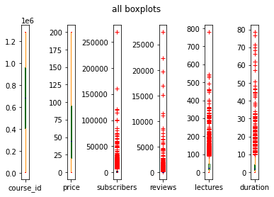

1. 課程種類與費用分布
課程共有4個種類。
可以明顯看出網站開發(web Development)跟金融(Business Fiance)有比較多的課程，而音樂(Musical Instruments)跟平面設計(Graphic Instruments)的課程則較少。不過如果把較少的兩部分合併，比例會變成33:32:35。比例很接近。
這份資料中適合拿來觀察的有3個項目，是否付費、訂閱人數、重看次數。
考慮到付費的課堂高達91.6%，大部分的課程都要付費；重看次數可能因為每個人的習慣不同而不能直接用來觀察。所以最後以訂閱人數為主來觀察。
2. 觀察top40受歡迎的課程(價錢，重看次數，課堂堂數，課程時間)和全部課程的差異。
排名前40的訂閱數量長條圖，排名的從前面往後看，越前面的訂閱數差距越大，而排名靠後的訂閱數會越相近。分析前40名的內容會發現，主要都是網頁開發的類別，有多達31個。前100名裡也都是網頁開發的內容占大多數。
比較top40跟全部資料的分布，top40大部分的價錢分布比較平均，比起全部課程，top40的課程平均會比較貴。用便宜的策略來吸引學生，可能成效不是很好。
top40的課難度只有all levels跟Beginner Level，分別占72.5%和27.5%。
我的想法是會上教育平台的人是積極想學習、比較主動的，他們正常來說應該會想學到越多內容越好，但如果課程的難度跟他個人的想像有落差時又可能會選到不適合的課，所以基本上會以這兩種難度優先。
3. 課堂數與時間分布比較
課堂數分布比較
課程時間分布比較
top40的課堂數量比較多，而且課程時間較長，課堂平均時間比較長(時常平均/課堂數平均)。課程長度越長可能比較能講的更豐富、更詳細。內容分類比較詳細的課程，可能學生可以比較好理解內容。所以時間較長、課堂較多能比較受歡迎。我的想法是會想用這種大部分要付費課的線上平台的人，通常是學習意願高、比較主動的人。他們挑課程應該會很認真看完教的內容介紹才做選擇，所以會比較容易挑選有以上兩個特點的課。
由此可見，網路開發的類別最受歡迎，且用低價的課程可能無法很有效的吸引消費者，內容豐富，有用心規劃好，高質量的課程比較能受歡迎。
分析總結：
綜觀整個資料，網站開發跟商業金融的課程占大部分。自然科學跟藝術類的課程幾乎沒有。雖然可能是udemy的品牌風格或策略規劃導致，但供給通常都是隨著需求而生的，這樣的課堂種類分布。我猜想大部分的人可能在出社會以後，就會比較重視收入，想要過比較舒適的生活，進而對提升職業技術和理財致富的知識。
Udemy沒有題目也沒有均一的點數系統，整個平台的風格比較偏向講者單方面的給觀眾講解內容，可能跟種類分布一樣是被udemy的品牌風格或策略規劃導致。本來會多花時間來用教育平台的人，就是比較積極的人，如果他們想多做練習，可是沒有這個功能，那對使用者來說，就是一件很可惜的事。
大部分的內容都是all levels和Beginner Level，再想想平台本身並沒有讓學生確認自己能力的機制。這樣如果使用者是有想特別鑽研某項專業或他想換不同風格或教法的老師。他在接下來找課的過程可能會浪費很多不必要的時間在找課上。設計一些類似leetcode或codesignal的題目和認證，應該可以改善這個問題。